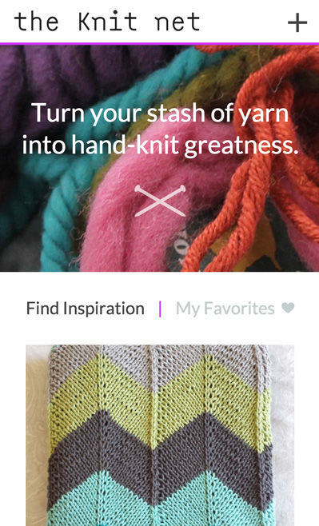
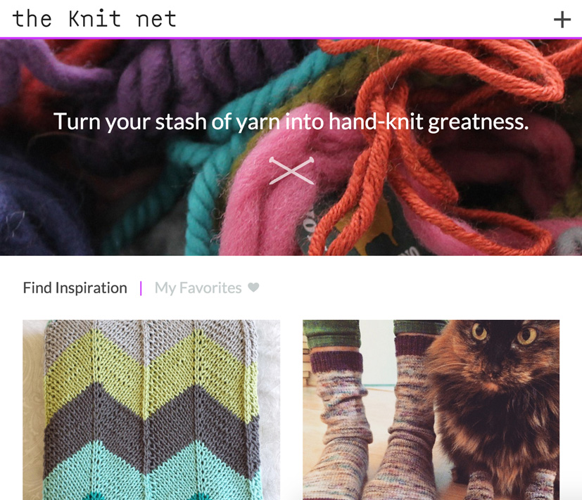
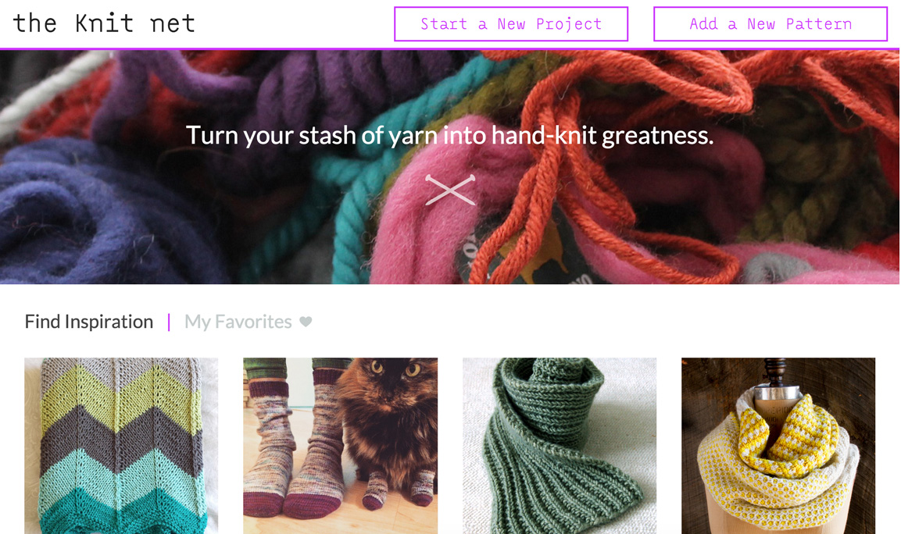
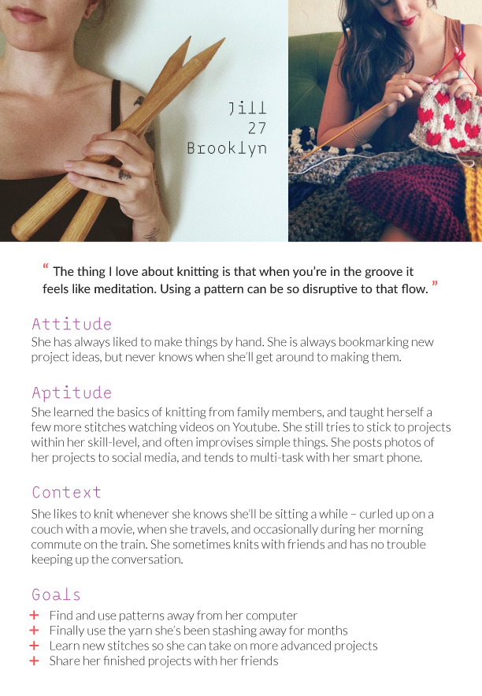
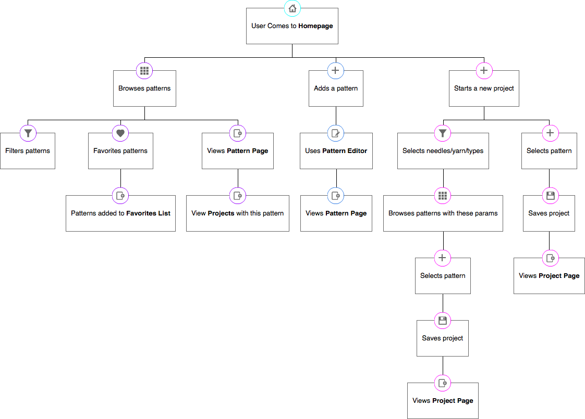
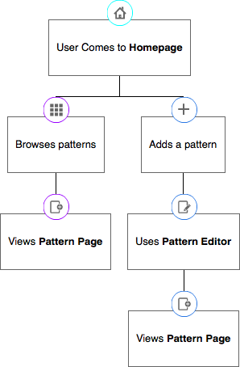

Design and Development of a web app that aims to improve the experience of crafting something by hand. View the working prototype.
The Knit Net is a personal project I have been working on for the past semester. My work at ITP explores the overlap of craft and tech; in particular I have been interested in how to leverage technology to improve the experience of making things by hand.
The idea for The Knit Net started as a simple javascript app, Knit Like Me, that I made to demonstrate the similarities between knitting and programming. While focusing on this metaphor, I ended up in many discussions with classmates about how crafting has been left behind by the tech world and how this could be improved.
My goal is to change the way people find, share, and use knitting patterns. I aim to make instructions and resources more interactive and accessible, and foster a collaborative online environment. Most importantly, I want to inspire users to start, finish and share their projects.
I am currently building the app with Node, Express, Mongo, and Jade templating engine, while rapidly improving my skills in CSS and Javascript. I am trying out a mobile-first approach with both design and development. By focusing on full-functionality on small screens before enhancing the experience for wider desktops, I hope to create an experience that is simple and fully responsive. You can view my code in progress on Github.
  I began by composing a picture of what it means to be a knitter today. I reached out to friends, classmates, and the online community on Reddit.com/r/knitting. My questions were centered around on what motivates someone to start a project and what that process is like. To help direct my research, I created a persona representing many of my core users.
I created a map of the core user flow, identifying pages and interactions that I want to see in the first version of the app. While my initial idea was centered around generating patterns, the current app encourages users to browse patterns, contribute to the library, and start new projects.
So far I have funtionality for browsing and adding patterns. This allows me to start refining the structure of my database based on the actual data I want to collect and display. Testing this will also help inform decisions I make for the rest of the app.
